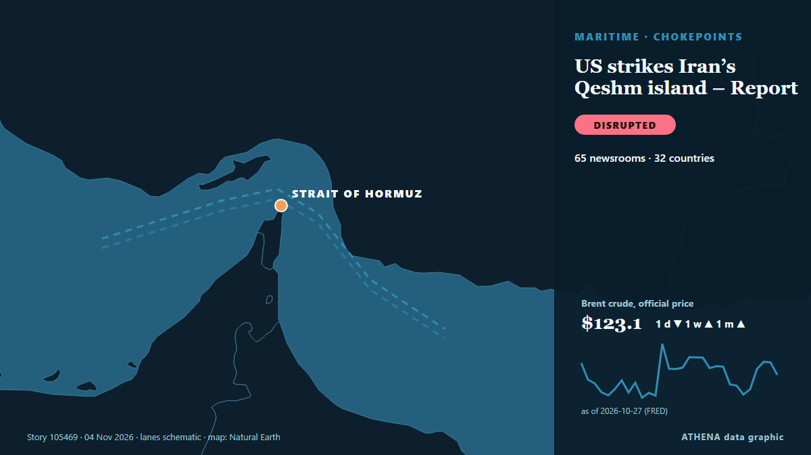

US strikes Iran’s Qeshm island – Report

The US has not publicly announced the attacks, so as not to signal any intention of resuming major combat operations, the Wall Street Journal reported. من CNA (Channel NewsAsia)
نشرته بشكل مستقل 66 مصدرًا في 33 دولة منذ 2 نوفمبر، وأول من نشره Arab News؛ والتغطية تتراجع. يقدّر ATHENA الخطر بأنه متزايد (5.8/10)، ويعود ذلك أساسًا إلى خطورة الضرر الموصوف ونطاقه الجغرافي والقطاعي. الثقة 87٪ (مرتفعة)، وعدد المصادر المستقلة المؤكِّدة: 66، بمتوسط موثوقية للمصادر يبلغ 75٪. وسائل الإعلام حسب البلد: الولايات المتحدة (5), الهند (4), تركيا (3). التغطية: من 2 نوفمبر إلى 3 نوفمبر، 6 ساعة.
لماذا يهم: يربط مضيق هرمز الخليج العربي بالمحيط المفتوح، ويمر عبره نحو خُمس النفط المستهلك في العالم؛ لذا تحرّك الهجمات على السفن أو التهديدات بإغلاقه أسعار الطاقة وأقساط التأمين خلال ساعات.
ما الذي تغيّر: 66 تقارير جديدة من 55 غرف أخبار خلال 24 ساعة حتى 4 نوفمبر.
العنوان الأول: Iran reports explosions near Qeshm Island
تُعرض العناوين بالإنجليزية كما نُشرت.
نظرة سريعة
اختير وقُيِّم وكُتب وفق منهجية ATHENA المنشورة. لا يتدخل أي محرر في الأحداث بعينها. كيف يُنتَج ›
| 02 Nov 21:15 UTC | 7 |
|---|---|
| 02 Nov 23:15 UTC | 7 |
| 03 Nov 01:15 UTC | 30 |
| 03 Nov 03:15 UTC | 17 |
| 03 Nov 05:15 UTC | 7 |
| 03 Nov 07:15 UTC | 2 |
| 03 Nov 09:15 UTC | 8 |
| 03 Nov 11:15 UTC | 2 |
| 03 Nov 13:15 UTC | 1 |
| 03 Nov 15:15 UTC | 0 |
| 03 Nov 17:15 UTC | 2 |
| 03 Nov 19:15 UTC | 1 |
| 03 Nov 21:15 UTC | 0 |
| 03 Nov 23:15 UTC | 0 |
| 04 Nov 01:15 UTC | 1 |
| 02 Nov 22:06 UTC | 3.4 |
|---|---|
| 03 Nov 01:50 UTC | 5.0 |
| 03 Nov 02:04 UTC | 5.8 |
| 03 Nov 03:11 UTC | 6.8 |
| 03 Nov 06:25 UTC | 5.8 |
| 03 Nov 11:12 UTC | 6.4 |
| 03 Nov 11:59 UTC | 5.1 |
| 03 Nov 12:22 UTC | 6.5 |
| 04 Nov 01:38 UTC | 5.8 |
لماذا هذه الأرقام
الأهمية
الخطر
الثقة
التغطية — من نشر الخبر ومتى
العنوان كما نُشر · يفتح الأصل- Arab News · المملكة العربية السعوديةUS has conducted defensive strikes on some Iranian targets in the Strait of Hormuz, US official says
- Arab Times · الكويتExplosions Heard Off Iran's Bandar Lengeh
- IRNA (English) · إيرانIRGC Navy captures third and fourth US drones intact over Qeshm island
- investingLive (ForexLive) · INTUp to six blasts reported near Iran’s Qeshm Island as Israeli TV cites US strike
- Shafaq News (English) · العراقIran reports explosions near Qeshm Island
- Mehr News (English) · إيرانExplosions heard on Qeshm Island, Bandar Lengeh
- investingLive (ForexLive) · INTCIA chief Ratcliffe reportedly advises Trump to keep ‘no war, no deal’ pressure on Iran
- Anadolu Agency (English) · تركياExplosions heard in southern Iran’s coastal areas: Reports
- NDTV · الهندUS Strikes Iran's Qeshm Island, Hours Before Midterm Elections
- Middle East Eye · INTBlasts heard in southern Iran
- Anadolu Agency (English) · تركياUS carries out 'defensive' strikes on Iran’s Qeshm Island: Report
- Xinhua (English) — page reader · الصينFlash: U.S. strikes Iran's Qeshm island -- media
- The Straits Times · سنغافورةUS carries out ‘defensive’ strikes on Iran’s Qeshm Island, officials say
- Haaretz (English) · إسرائيلReport: U.S. struck Iran's Qeshm Island overnight
- Middle East Eye · INTReport: US launched strikes on Iran
- CNA (Channel NewsAsia) · سنغافورةUS strikes Iran's Qeshm island: Report
- Times of India · الهندUS launches 'secret' strikes on Iran’s Qeshm Island as peace talks teeter along
- FXStreet · إسبانياUS strikes Iran’s Qeshm Island near Strait of Hormuz — WSJ
- TRT World · تركياUS carries out strikes on Iran's Qeshm Island — report
- The National · الإمارات العربية المتحدةUS carries out attack on Iran's Qeshm Island
- TASS (English) · روسياUS strikes Iranian island of Qeshm, WSJ says
- APA (English) · أذربيجانUS struck Iran's Qeshm Island
- New Straits Times · ماليزياOil rises after report of US strike on Iran's Qeshm Island
- Business Recorder · باكستانUS struck Iran's Qeshm Island, Wall Street Journal reports
- NBC News (World) · الولايات المتحدةU.S. military carries out limited strikes on Iran’s Qeshm Island
- Livemint · الهندUS strikes Iran's Qeshm Island, oil prices rise as fears of renewed conflict and disruptions mount
- RFE/RL (English) · INTUS Strikes Iranian Island As Trump Downplays Prospect Of Renewed Conflict
- The Hill · الولايات المتحدةUS military strikes Iran’s Qeshm Island day before midterms
- Al Jazeera English · قطرExplosions hit Iran’s Qeshm Island as US media report US strikes in Hormuz
- Indian Express · الهندUS strikes Iran’s Qeshm Island as Trump says deal is coming together
- Free Malaysia Today · ماليزياUS strikes Iran’s Qeshm island
- France 24 English · فرنساUS strikes Iran's Qeshm Island as Trump signals progress in talks
- ABC News Australia · أسترالياUS has struck Iranian targets in Strait of Hormuz, US official says
- The National · الإمارات العربية المتحدةIran war latest: Tehran entering last-ditch talks with 'complete pessimism'
- Gulf News · الإمارات العربية المتحدةUS ‘defensive’ strikes on Iran's Qeshm Island: Latest developments as peace talks continue
- APA (English) · أذربيجانUS military aircraft destroys missile launcher on Qeshm Island
- The Daily Star — page reader · بنغلاديشUS strikes Iran's Qeshm island: Wall Street Journal
- CNBC World · الولايات المتحدةU.S. strikes Iran’s Qeshm Island as Vance hopes for ‘negotiated settlement’ with Tehran
- CBS News (World) · الولايات المتحدةU.S. launches strikes on Iranian targets in Strait of Hormuz
- PBS NewsHour · الولايات المتحدةU.S. strikes Iranian targets in Strait of Hormuz, U.S. official tells AP